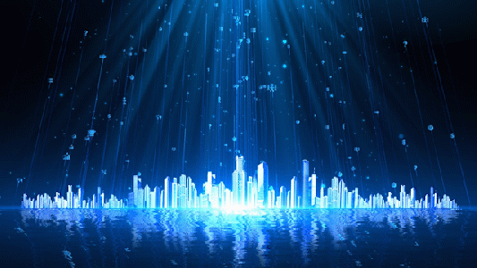

VR 密室逃脱游戏
项目简介
-
本项目旨在开发一款沉浸式的 VR 密室逃脱游戏，玩家需要通过解决一系列的谜题和挑战来逃出多个不同的密室。
游戏中包含了多种互动元素，如手柄控制、射线发射、物品拾取和使用等，让玩家能够充分体验 VR 环境下的互动乐趣。
关键技术
- Unity: 游戏引擎，用于创建和设计 VR 游戏场景和逻辑
- Pico SDK: 提供对 Pico VR 设备的支持，包括手柄输入和设备控制
- Audio Tools: 用于制作和编辑游戏音效和背景音乐。
基础设施
- PXRManager: 管理和初始化 Pico SDK 相关功能，包括设备连接和设置。
- XR 场景: 创建和管理 XR 环境，处理场景中的各类 VR 交互。
- UI Canvas: 管理和显示用户界面元素，处理手柄输入和交互。
游戏逻辑
- 输入控制: 获取并处理手柄输入，支持手柄按钮和摇杆操作。处理玩家移动、跳跃和旋转逻辑。
- 射线管理: 实现射线发射逻辑，用于交互和检测物体。管理射线碰撞事件和触发相应的游戏行为。
互动系统
- 物品拾取和使用: 实现物品拾取、放置和使用逻辑，如捡起钥匙、使用医疗箱等。
- 手枪和射击: 实现手枪射击逻辑，包括射线射击、子弹生成和射击特效。
- 敌人管理: 创建敌人管理器，控制敌人的生成、移动和攻击逻辑。实现敌人受伤和死亡的处理逻辑。
场景管理
- 关卡搭建: 创建多个不同场景关卡，包括主界面和各个密室场景。配置场景切换逻辑，实现不同关卡之间的无缝衔接。
- 动画和特效: 制作各类动画效果，如开门、物体移动和渐变黑屏等。管理场景中的特效，如射击特效、敌人攻击和玩家受伤特效。
用户体验
- 启动画面和淡入淡出效果: 提供友好的用户体验，提升沉浸感。
- 静态注视点渲染: 优化渲染性能，确保流畅的游戏体验。
- VR 合成层模式: 支持多种 VR 渲染模式，提升视觉效果。
无限世界
项目简介
-
《无限世界》是一款采用先进的程序生成技术打造的开放世界冒险游戏。在这个游戏中，玩家将探索一个理论上无限大的游戏世界，
每次启动都会生成独特的地形、生物和任务，为玩家提供无穷的探索乐趣和挑战。
关键技术
- 程序生成地图: 通过算法生成无限多样的地形和生态系统，确保每次游戏体验都是独一无二的。
- 种子系统: 确保相同的种子值可以生成相同的世界，玩家可以分享自己的种子值，让其他玩家体验相同的世界配置。
- 深度的制作与建造系统: 提供直观的制作菜单和建造界面，让玩家能够轻松制作各种武器、盔甲和建筑物，实现创意的自由表达。
- 动态任务生成系统: 提供多样的任务类型，根据玩家行为和世界状态动态生成任务，确保游戏过程中的挑战性和变化性。
基础设施
- 游戏引擎: 使用Unity引擎作为游戏的基础开发平台，提供了渲染、物理、声音、动画等基础功能。
- 工具集: 包括Unity内置的编辑器工具、Asset Store中的插件、自定义编辑器脚本等，用于简化游戏开发和管理。
游戏逻辑
- 世界生成与地形编辑: 包括随机地图生成、地形修改、生物群落分布、资源分布等，确保每局游戏的世界都是独特的。
- 物资合成及装备系统: 管理物品的获取、使用、丢弃，以及装备的穿戴、卸下，合成。
- 玩家控制与角色系统: 实现玩家操作角色的移动、攻击、技能释放等功能，包括角色属性、状态机、动画控制等。
- 经济与交易系统: 管理游戏中的货币系统、商店系统和交易机制。
互动系统
- NPC系统: 设计和管理各种NPC，包括村民、商人、任务NPC等，实现与它们的对话、交易和任务接取。
- 事件触发与反馈: 设计响应玩家行为的事件触发机制，如地图事件、天气变化、季节变迁等，增强游戏的动态性和互动性。
场景管理
- 区域管理与加载优化设计区域划分、加载优先级、远景与近景加载控制，提高游戏的性能和体验。
- 地图与战斗场景: 管理地图的生成、战斗场景的布置与切换，确保每个场景都能完整呈现游戏的视觉和玩法特色。
用户体验
- UI界面设计: 设计游戏的主界面、菜单、背包、设置等UI界面，以用户友好的方式展示游戏信息和功能。
- 音效与背景音乐:添加游戏中的音效、背景音乐和音乐切换机制，增强游戏的氛围和沉浸感。
- 交互设计与反馈: 设计用户操作的响应速度、动画效果、按钮反馈等，优化用户体验和操作流畅性。